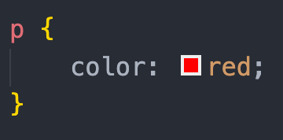
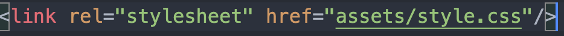
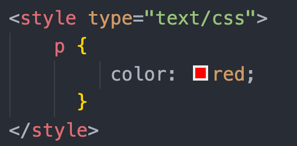
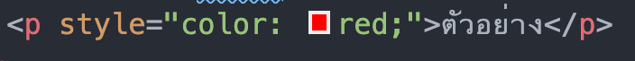
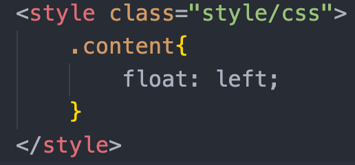
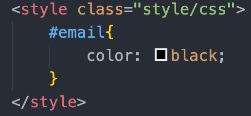
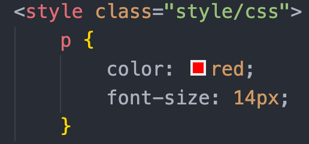
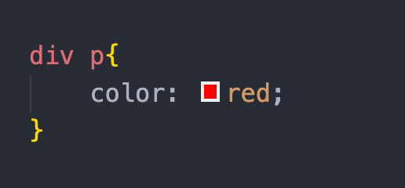
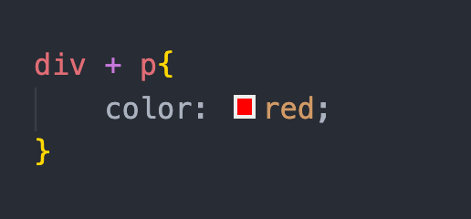

| โจทย์ | คำตอบ |
|---|---|
| 1. CSS Syntax ประด้วยอะไรบ้าง ? |
1.selector คือส่วน html tag เช่น p 2.declaration คือส่วนประกาศลักษณะ 2.1.property คือส่วนคุณสมบัติ เช่น color 2.2.value คือค่าที่กำหนด เช่น red  |
| 2. การเขียน CSS มีกี่แบบ อะไรบ้าง ? |
External CSS คือ การนำไฟล์ css เข้าจากภายนอก  Internal CSS คือ การเขียนภายใน หน้า HTML  Inline CSS คือ การเขียนภายใน tah html  |
| 3. selector มีกี่แบบ อะไรบ้าง ? |
1. Class Selectors Class Selectors เป็น Selector ที่เราต้องกำหนดชื่อของ Selector ขึ้นมาเอง โดย Class Selector การเรียกใช้งานต้องระบุชื่อ Class Selectors ให้กับ Tag ของ HTML จึงจะสามารถใช้งานคุณสมบัติของ Class ที่ได้สร้างไว้ได้  2. ID Selectors ID Selectors เป็น Selector ที่อ้างอิงกับ Attribute ที่ชื่อว่า ID ซึ่งเขียนอยู่ภายใน Tag ของ HTML โดยที่ Tag ของ HTML ใดมี ID ซึ่งตรงกับ ID Selectors ที่กำหนด คุณสมบัติของ CSS ที่กำหนดไว้กับ Selector ก็จะมีผลต่อ Tag นั้น  3. TAG Selectors TAG Selectors สำหรับ Selector ในรูปแบบสุดท้ายที่จะกล่าวถึงในเบื้องต้นนี้เป็น Selector ที่อ้างอิงกับชื่อ Tag ของ HTML โดยตรง นั่นหมายความว่า ถ้าหากกำหนดคุณสมบัติให้แก่ TAG Selectors นี้แล้ว Tag ของ HTML ที่มีชื่อเดียวกับ Selectors นี้็จะมีคุณสมบัติของ CSS เหมือนกันหมดทุก Tag ภายในเว็บเพจนั้น  |
| 4. combinator มีกี่แบบ อะไรบ้าง ? |
1.Descendant selector (space) : div p = tag p ทั้งหมดที่อยู่ใน div  2.Child selector (>) : div > p = tag p ที่เป็นลูกของ div 3.Adjacent sibling selector (+) : div + p = tag p ที่อยู่ล่าง div และติดกับ div เท่านั้น  4.General sibling selector (~) : div ~ p = tag p ที่อยู่ล่าง div ทุก tag |